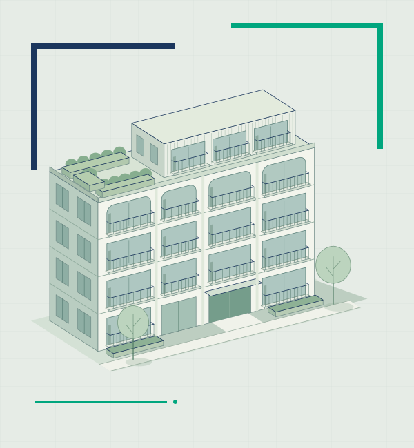
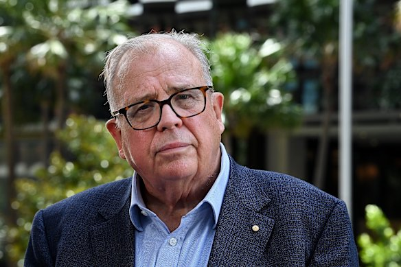

Construction industry advisory
Better thinking.
Better building.
Expert advice for an industry ready to move forward.
Construction Edge is an independent advisory service led by David Chandler, former NSW Building Commissioner. Bringing a clear perspective to quality, productivity and the way we deliver our built environment.

to practical progress.
Developers & builders / Government & housing providers / Industry leaders
01 / Our expertise
Clarity on the
issues that matter.
From the decisions made in the boardroom to the way work comes together on site, better outcomes start with asking better questions.
Find the right starting point01Quality & confidence
Put quality, accountability and the customer at the centre of delivery. An independent perspective on the practices, responsibilities and evidence that build confidence in a project.
02Productivity & modern construction
Look beyond individual technologies to how the whole delivery system works. Explore better coordination, off-site construction and supply-chain capability, with a focus on measurable improvements.
03Housing delivery & industry strategy
Connect housing ambition with the practical conditions needed to deliver. Test assumptions, identify barriers and develop approaches that bring policy, commercial realities and construction capability together.
04Leadership & industry dialogue
Bring an informed, direct voice to the conversations shaping construction. Strategic briefings, facilitated discussions and speaking engagements that challenge established thinking and focus attention on practical action.
02 / Led by experience

David Chandler.
Former NSW Building Commissioner 2019–2024
A perspective shaped
by the whole industry.
David brings together construction industry experience, a long-standing interest in modern methods of delivery, and the perspective gained from leading building reform in NSW.
As NSW Building Commissioner, he helped place building quality and consumer confidence at the centre of the industry conversation. Through Construction Edge, that focus informs independent advice on what needs to change, and how to move forward.
Better outcomes for the people
who build, buy and use buildings.
03 / The Construction Edge Journal
Ideas worth
building on.
A space for David’s long-form thinking on the people, systems and decisions shaping construction.
Explore the JournalDavid’s publication / Now on Substack
The Construction Edge.
Independent thinking on how we build, what needs to change, and who needs to take responsibility.
Loading David’s latest essays…
04 / Start a conversation
What needs
to change?
Tell us about the decision, project or industry challenge in front of you. Let’s explore where an independent perspective could help.
Your enquiry is processed by Formspree and emailed to Construction Edge. We’ll use your details to respond. Sending an enquiry does not subscribe you to the newsletter.